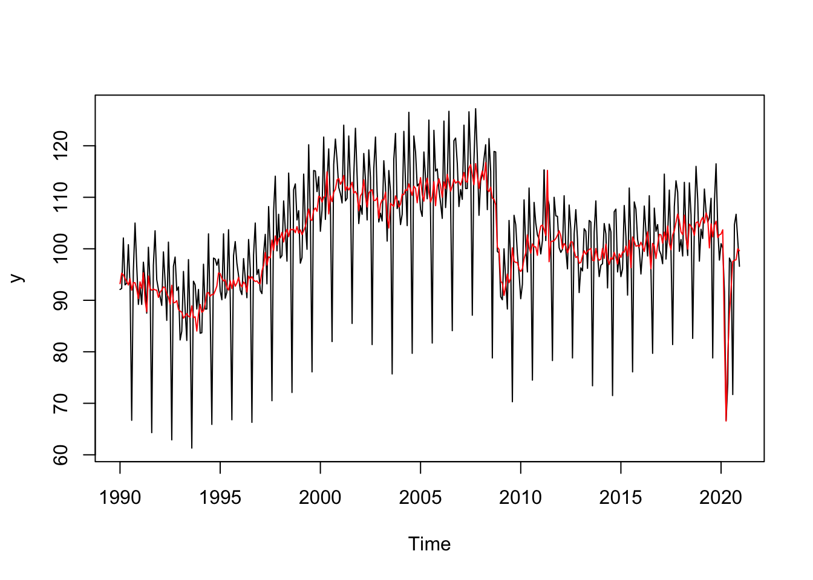

library(RJDemetra)1 - R et JDemetra+ (V2)
Désaisonnaliser une série temporelle
L’objectif de ce TP est d’apprendre à manipuler JDemetra+ sous R à travers le package RJDemetra.
Pour manipuler JDemetra+ sous R il y a actuellement deux façons :
Utiliser le JWSACruncher qui permet, à partir de la console, de mettre à jour un workspace JDemetra+ et d’exporter les résultats sans devoir ouvrir le logiciel. Pour faciliter son utilisation depuis R, le package
rjwsacruncherpeut être utilisé (voir TP5 - JDemetra+ en production).Utiliser le package
RJDemetraqui permet d’effectuer des désaisonnalisations avec les mêmes algorithmes et paramètres que JDemetra+ et de manipuler des workspaces.
Dans ce TP on utilisera les données du package RJDemetra mais n’hésitez pas à utiliser vos propres séries !
Pour faire de la désaisonnalisation sous R il existe plusieurs packages :
seasonaletx12qui permettent de faire du X-13ARIMA-SEATS en utilisant les programmes du US Census BureauRJDemetraqui est une interface R à JDemetra+ et c’est ce package que l’on va étudier.
RJDemetra est sur le CRAN et se base sur les librairies Java de JDemetra+. Pour l’utiliser il faut avoir Java 8 ou plus. En cas de problème d’installation voir le manuel d’installation.
Le package a aussi un site web (https://rjdverse.github.io/rjdemetra/).
RJDemetra permet :
De faire des modèles RegARIMA, TRAMO-SEATS and X-13-ARIMA comme dans JDemetra+ en définissant sa propre spécification
Manipuler les workspaces de JDemetra+
Importer les modèles workspaces sauvegardés par JDemetra+
Exporter les modèles créés sous RJDemetra
Commencez par charger le package RJDemetra :
1 Créer une specification
Dans les prochains exercices, la série utilisée sera ipi_c_eu[, "FR"] qui est l’IPI français. Vous pouvez bien sûr adapter le code pour utiliser vos propres séries. Les fonctions utilisées seront x13(), x13_spec(), regarima_x13, regarima_x13_spec ou regarima. Le détail des spécifications pré-définies par JDemetra+ sont disponibles ici.
Exercice
Faire la désaisonnalisation d’une série avec X-13 avec la spécification suivante :
détection automatique du schéma de décomposition, des outliers et du modèle ARIMA ;
une correction des jours ouvrables “working days” et un effet graduel de Pâques.
Faire ensuite un graphique avec la série brute et la série désaisonnalisée.
Indice
Utiliser la spécification RSA4c pour la désaisonnalisation.
Si le modèle créé s’appelle mysa, regarder les valeurs de mysa$final, mysa$final$series et mysa$final$forecasts.
Solution
library(RJDemetra)
mysa <- x13(ipi_c_eu[, "FR"], spec = "RSA4c")
mysaRegARIMA
y = regression model + arima (2, 1, 1, 0, 1, 1)
Log-transformation: no
Coefficients:
Estimate Std. Error
Phi(1) 0.05291 0.108
Phi(2) 0.18672 0.074
Theta(1) -0.52137 0.103
BTheta(1) -0.66132 0.042
Estimate Std. Error
Week days 0.6927 0.031
Leap year 2.0903 0.694
Easter [1] -2.5476 0.442
TC (4-2020) -35.6481 2.092
AO (3-2020) -21.1492 2.122
AO (5-2011) 13.1869 1.810
LS (11-2008) -9.2744 1.758
LS (1-2009) -7.2838 1.756
Residual standard error: 2.193 on 346 degrees of freedom
Log likelihood = -795.1, aic = 1616 aicc = 1617, bic(corrected for length) = 1.767
Decomposition
Monitoring and Quality Assessment Statistics:
M stats
M(1) 0.127
M(2) 0.079
M(3) 1.094
M(4) 0.558
M(5) 1.093
M(6) 0.022
M(7) 0.085
M(8) 0.242
M(9) 0.064
M(10) 0.261
M(11) 0.247
Q 0.355
Q-M2 0.389
Final filters:
Seasonal filter: 3x5
Trend filter: 13 terms Henderson moving average
Final
Last observed values
y sa t s i
Jan 2020 101.0 102.87273 103.0457 -1.8727280 -0.1730003
Feb 2020 100.1 103.69025 103.0626 -3.5902540 0.6276448
Mar 2020 91.8 82.69170 103.2654 9.1083000 -20.5736602
Apr 2020 66.7 66.55184 103.6945 0.1481625 -37.1426277
May 2020 73.7 79.28883 104.1379 -5.5888279 -24.8490764
Jun 2020 98.2 87.35362 104.4539 10.8463757 -17.1002284
Jul 2020 97.4 92.26057 104.5518 5.1394323 -12.2912806
Aug 2020 71.7 97.54392 104.3369 -25.8439193 -6.7929846
Sep 2020 104.7 97.75728 103.8361 6.9427184 -6.0788659
Oct 2020 106.7 97.87016 103.1969 8.8298396 -5.3267823
Nov 2020 101.6 100.01475 102.6601 1.5852540 -2.6453446
Dec 2020 96.6 99.61740 102.4081 -3.0173983 -2.7907314
Forecasts:
y_f sa_f t_f s_f i_f
Jan 2021 94.29728 101.0937 102.3876 -6.7963909 -1.2939310
Feb 2021 97.89298 101.6869 102.4525 -3.7939488 -0.7655396
Mar 2021 113.65190 102.1478 102.4593 11.5041248 -0.3115701
Apr 2021 102.34532 102.1806 102.3419 0.1647274 -0.1612727
May 2021 96.14552 101.6436 102.1712 -5.4980759 -0.5276194
Jun 2021 112.15785 101.2156 102.0241 10.9422549 -0.8085520
Jul 2021 104.38495 101.5439 101.9635 2.8410057 -0.4195241
Aug 2021 79.02901 102.3820 102.0412 -23.3530134 0.3408366
Sep 2021 109.40288 102.3705 102.1977 7.0323700 0.1728109
Oct 2021 108.22472 101.8558 102.3655 6.3689511 -0.5096780
Nov 2021 106.22014 102.4265 102.5266 3.7936049 -0.1000754
Dec 2021 99.67523 102.9462 102.6812 -3.2709156 0.2649189
Diagnostics
Relative contribution of the components to the stationary
portion of the variance in the original series,
after the removal of the long term trend
Trend computed by Hodrick-Prescott filter (cycle length = 8.0 years)
Component
Cycle 1.830
Seasonal 51.089
Irregular 0.927
TD & Hol. 2.179
Others 44.916
Total 100.941
Combined test in the entire series
Non parametric tests for stable seasonality
P.value
Kruskall-Wallis test 0.000
Test for the presence of seasonality assuming stability 0.000
Evolutive seasonality test 0.014
Identifiable seasonality present
Residual seasonality tests
P.value
qs test on sa 0.924
qs test on i 0.643
f-test on sa (seasonal dummies) 0.671
f-test on i (seasonal dummies) 0.453
Residual seasonality (entire series) 0.415
Residual seasonality (last 3 years) 0.954
f-test on sa (td) 0.091
f-test on i (td) 0.333
Additional output variablesy <- mysa$final$series[,"y"]
# De façon équivalente :
y <- get_ts(mysa)
sa <- mysa$final$series[,"sa"]
plot(y)
lines(sa, col = "red")
# ou on peut directement utiliser les fonctions de RJDemetra :
plot(mysa, first_date = 2000, #Pour n'afficher le graphique qu'à partir de 200
type_chart = "sa-trend" # Pour faire le graphique avec y, sa et tendance
)
Pour des graphiques ggplot2, on peut également utiliser le package ggdemetra :
library(ggdemetra)
# y <- ggdemetra::raw(mysa)
# sa <- ggdemetra::seasonaladj(mysa)
p_sa <-
ggplot(data = ggdemetra::ts2df(y),
mapping = aes(x = date, y = y)) +
geom_line(color = "#F0B400") +
labs(title = "Y, Sa, Trend",
x = NULL, y = NULL) +
geom_sa(component = "y_f", linetype = 2,
spec = x13_spec(mysa), frequency = 12,
color = "#F0B400") +
geom_sa(component = "sa", color = "#155692") +
geom_sa(component = "sa_f", color = "#155692", linetype = 2)+
geom_sa(component = "t", color = "#1E6C0B") +
geom_sa(component = "t_f", color = "#1E6C0B", linetype = 2) +
theme_bw()
p_sa
Exercice
Modifier le modèle précédent pour enlever l’effet graduel de Pâques.
Solution
spec_sans_easter <- x13_spec(mysa,
easter.enabled = FALSE)
mysa2 <- x13(ipi_c_eu[, "FR"], spec_sans_easter)
mysa2$regarimay = regression model + arima (2, 1, 1, 0, 1, 1)
Log-transformation: yes
Coefficients:
Estimate Std. Error
Phi(1) 0.05032 0.118
Phi(2) 0.09575 0.082
Theta(1) -0.55559 0.110
BTheta(1) -0.73033 0.039
Estimate Std. Error
Week days 0.007179 0.000
AO (5-2011) 0.124297 0.018
LS (11-2008) -0.086926 0.017
LS (1-2009) -0.071005 0.017
Residual standard error: 0.02133 on 338 degrees of freedom
Log likelihood = 838, aic = 1548 aicc = 1548, bic(corrected for length) = -7.561
Exercice
Calculer les p-valeurs associées au modèle Reg-ARIMA de la précédente spécification.
Indice
Récupérer le modèle Reg-ARIMA et utiliser la fonction summary().
Solution
reg_sum <- summary(mysa2$regarima)
reg_sumy = regression model + arima (2, 1, 1, 0, 1, 1)
Model: RegARIMA - X13
Estimation span: from 1-1990 to 12-2019
Log-transformation: yes
Regression model: no mean, trading days effect(1), no leap year effect, no Easter effect, outliers(3)
Coefficients:
ARIMA:
Estimate Std. Error T-stat Pr(>|t|)
Phi(1) 0.05032 0.11801 0.426 0.670
Phi(2) 0.09575 0.08224 1.164 0.245
Theta(1) -0.55559 0.10956 -5.071 6.45e-07 ***
BTheta(1) -0.73033 0.03938 -18.545 < 2e-16 ***
---
Signif. codes: 0 '***' 0.001 '**' 0.01 '*' 0.05 '.' 0.1 ' ' 1
Regression model:
Estimate Std. Error T-stat Pr(>|t|)
Week days 0.0071788 0.0003171 22.637 < 2e-16 ***
AO (5-2011) 0.1242970 0.0180390 6.890 2.63e-11 ***
LS (11-2008) -0.0869263 0.0171661 -5.064 6.69e-07 ***
LS (1-2009) -0.0710049 0.0171449 -4.141 4.34e-05 ***
---
Signif. codes: 0 '***' 0.001 '**' 0.01 '*' 0.05 '.' 0.1 ' ' 1
Residual standard error: 0.02133 on 338 degrees of freedom
Log likelihood = 838, aic = 1548, aicc = 1548, bic(corrected for length) = -7.561On peut récupérer ces valeurs en exploitant l’objet reg_sum :
reg_sum$coefficients$arima
Estimate Std. Error T-stat Pr(>|t|)
Phi(1) 0.05031546 0.11801332 0.426354 6.701142e-01
Phi(2) 0.09575287 0.08224054 1.164303 2.451013e-01
Theta(1) -0.55559277 0.10955864 -5.071191 6.449100e-07
BTheta(1) -0.73033107 0.03938071 -18.545401 0.000000e+00
$regression
Estimate Std. Error T-stat Pr(>|t|)
Week days 0.007178836 0.0003171301 22.636876 0.000000e+00
AO (5-2011) 0.124296961 0.0180390210 6.890449 2.628564e-11
LS (11-2008) -0.086926347 0.0171661398 -5.063826 6.685537e-07
LS (1-2009) -0.071004892 0.0171448840 -4.141462 4.338403e-05
$fixed_out
NULL
$fixed_var
NULL2 Créer un workspace
Dans cette partie nous allons créer un workspace depuis R. Pour cela les fonctions qui peuvent être utilisées sont new_workspace(), load_workspace(), new_multiprocessing(), add_sa_item(), save_workspace(), compute(), get_object(), get_name(), get_ts() ou count().
Exercice
Créer un workspace qui va contenir une série désaisonnalisée selon 3 spécifications différentes.
Solution
jws <- new_workspace()
new_multiprocessing(jws, "MP-1")
add_sa_item(jws, "MP-1", mysa, "X13 avec Pâques")
add_sa_item(jws, "MP-1", mysa2, "X13 sans Pâques")
add_sa_item(jws, "MP-1", tramoseats(ipi_c_eu[, "FR"]), "TRAMO-SEATS")
save_workspace(jws, "mon_premier_workspace.xml")
Exercice
Importer le workspace précédent et récupérer :
- Le nom du premier multi-processing
- Le nombre de modèles dans ce premier multi-processing
- L’ensemble des séries brutes
- Le 2ème modèle
Solution
jws <- load_workspace("mon_premier_workspace.xml")
compute(jws)
count(jws) # Nombre de multiprocessing[1] 1jmp1 <- get_object(jws, 1) # Le premier multiprocessing
get_name(jmp1)[1] "MP-1"count(jmp1)[1] 3all_y <- get_ts(jmp1) # toutes les séries brutes
model2 <- get_object(jmp1, 2) # On récupère l'objet associé au 2ème modèle
get_model(model2, jws)RegARIMA
y = regression model + arima (2, 1, 1, 0, 1, 1)
Log-transformation: yes
Coefficients:
Estimate Std. Error
Phi(1) 0.05032 0.118
Phi(2) 0.09575 0.082
Theta(1) -0.55559 0.110
BTheta(1) -0.73033 0.039
Estimate Std. Error
Week days 0.007179 0.000
AO (5-2011) 0.124297 0.018
LS (11-2008) -0.086926 0.017
LS (1-2009) -0.071005 0.017
Residual standard error: 0.02133 on 338 degrees of freedom
Log likelihood = 838, aic = 1548 aicc = 1548, bic(corrected for length) = -7.561
Decomposition
Monitoring and Quality Assessment Statistics:
M stats
M(1) 0.080
M(2) 0.044
M(3) 0.925
M(4) 0.324
M(5) 1.018
M(6) 0.172
M(7) 0.075
M(8) 0.207
M(9) 0.069
M(10) 0.229
M(11) 0.207
Q 0.311
Q-M2 0.344
Final filters:
Seasonal filter: 3x5
Trend filter: 13 terms Henderson moving average
Final
Last observed values
y sa t s i
Jan 2019 103.9 104.9497 104.8872 0.9899977 1.0005966
Feb 2019 101.9 106.2130 105.1277 0.9593928 1.0103234
Mar 2019 111.0 104.7070 105.2207 1.0601007 0.9951182
Apr 2019 107.4 105.0688 105.1200 1.0221871 0.9995130
May 2019 105.5 108.7078 104.9337 0.9704918 1.0359658
Jun 2019 105.8 101.5038 104.6881 1.0423256 0.9695826
Jul 2019 110.1 105.4918 104.3766 1.0436828 1.0106850
Aug 2019 78.7 102.6361 104.0097 0.7667871 0.9867928
Sep 2019 108.5 104.0439 103.5870 1.0428287 1.0044106
Oct 2019 116.8 104.5857 103.1442 1.1167879 1.0139754
Nov 2019 103.8 101.7786 102.7722 1.0198610 0.9903319
Dec 2019 97.7 101.5883 102.5735 0.9617252 0.9903948
Forecasts:
y_f sa_f t_f s_f i_f
Jan 2020 101.86190 102.9804 102.5981 0.9891385 1.0037265
Feb 2020 100.79119 103.1440 102.8002 0.9771887 1.0033443
Mar 2020 111.43956 102.5781 103.0224 1.0863878 0.9956869
Apr 2020 105.54428 103.3790 103.2028 1.0209447 1.0017079
May 2020 96.34392 104.3346 103.2155 0.9234131 1.0108422
Jun 2020 112.45079 102.5347 103.0496 1.0967099 0.9950029
Jul 2020 106.92345 102.3231 102.8558 1.0449593 0.9948203
Aug 2020 76.61765 102.5744 102.7208 0.7469472 0.9985747
Sep 2020 110.47115 103.3476 102.6644 1.0689277 1.0066554
Oct 2020 111.53872 102.2010 102.6987 1.0913668 0.9951530
Nov 2020 104.52886 102.5479 102.7719 1.0193176 0.9978206
Dec 2020 101.73775 103.4319 102.9459 0.9836210 1.0047204
Diagnostics
Relative contribution of the components to the stationary
portion of the variance in the original series,
after the removal of the long term trend
Trend computed by Hodrick-Prescott filter (cycle length = 8.0 years)
Component
Cycle 1.984
Seasonal 62.978
Irregular 0.998
TD & Hol. 2.273
Others 33.676
Total 101.909
Combined test in the entire series
Non parametric tests for stable seasonality
P.value
Kruskall-Wallis test 0.000
Test for the presence of seasonality assuming stability 0.000
Evolutive seasonality test 0.429
Identifiable seasonality present
Residual seasonality tests
P.value
qs test on sa 1.000
qs test on i 0.965
f-test on sa (seasonal dummies) 0.625
f-test on i (seasonal dummies) 0.474
Residual seasonality (entire series) 0.779
Residual seasonality (last 3 years) 0.878
f-test on sa (td) 0.076
f-test on i (td) 0.385
Additional output variables3 Manipuler les objets Java
L’objectif de cette partie est de manipuler la fonction jx13() pour gagner en temps de calcul.
Exercice
Créer un modèle à partir de la fonction jx13() et la spécification sans effet graduel de pâques crée dans la section 1.
Solution
myjsa <- jx13(ipi_c_eu[, "FR"], spec_sans_easter)
get_indicators(myjsa, "sa")$sa
Jan Feb Mar Apr May Jun Jul
1990 93.27297 96.29529 94.47992 93.73334 93.94507 92.83948 94.28898
1991 93.61809 93.12145 92.56800 92.23966 88.02740 94.55282 92.48219
1992 91.62891 91.43164 92.38484 92.19526 91.08704 90.59578 89.51814
1993 87.30634 87.99736 86.85921 86.97894 86.99296 87.29234 86.76534
1994 88.69622 87.77278 88.37550 89.30617 91.27332 91.48108 90.65425
1995 95.09916 94.52731 93.92731 93.90941 92.37904 92.04264 93.77960
1996 93.06670 91.54362 94.26169 93.30918 91.32878 94.96354 94.26156
1997 93.06742 95.67044 95.13059 101.85852 96.43204 98.44794 98.23010
1998 102.13804 103.25275 102.01932 102.89690 103.62209 101.81934 103.60992
1999 103.71964 102.64444 103.76759 104.04665 106.13300 106.82584 105.69365
2000 110.38789 107.38428 109.60527 110.17270 114.61835 106.35539 110.67086
2001 112.45025 113.34404 113.88119 110.73914 111.61677 111.49774 112.13527
2002 110.26696 110.99285 111.13280 111.58735 107.54579 111.87216 110.92070
2003 108.72641 109.77205 109.75157 109.85823 105.81090 105.36978 108.56247
2004 109.12622 109.43552 109.52322 110.42603 111.47708 112.70525 111.38248
2005 114.72877 111.07384 106.23729 114.40231 113.83685 111.14636 109.33782
2006 112.84431 110.57123 111.88826 111.79247 114.34733 112.62975 111.48879
2007 112.53191 114.29580 114.23700 113.06787 112.93424 115.43386 116.32302
2008 114.06045 113.94480 111.07963 118.83142 111.92185 110.96502 111.54674
2009 93.60983 93.32624 92.17978 92.82197 94.61843 94.29186 94.42552
2010 95.51379 96.12075 98.46494 99.01596 102.81820 100.22951 99.30088
2011 104.88512 104.72507 103.63569 102.25128 116.10802 97.55663 101.60353
2012 102.83064 98.48657 101.60323 99.95552 99.30289 100.25687 101.48753
2013 97.45647 98.45690 97.93752 100.35136 99.79029 100.14504 100.08302
2014 97.89835 100.00657 98.78845 99.56271 98.29814 97.26484 98.38400
2015 98.27255 99.53811 99.50288 99.07983 99.28072 101.49169 96.66780
2016 101.32397 99.22467 96.95194 102.97678 105.03035 100.37169 96.68839
2017 102.72859 101.41668 102.63069 100.60801 106.58076 101.54655 100.67684
2018 103.19713 103.14126 103.70513 103.35321 102.04279 105.47625 105.16178
2019 104.94974 106.21301 104.70704 105.06883 108.70777 101.50380 105.49182
Aug Sep Oct Nov Dec
1990 92.81532 93.42471 93.21965 92.25071 90.06120
1991 91.72254 92.21808 91.96428 92.02285 90.46195
1992 91.95223 89.69252 89.81277 90.02832 88.33305
1993 87.30196 87.03081 87.21300 84.45288 87.46656
1994 91.37247 91.19741 91.98386 92.78677 95.17153
1995 92.38821 93.99473 92.85706 93.36671 94.38969
1996 93.75684 94.14529 93.72433 93.79062 93.43034
1997 101.81145 99.64928 101.86478 100.90774 101.70138
1998 103.62658 103.60456 103.09096 104.46065 102.99964
1999 106.07083 107.12621 108.29389 107.17738 110.10121
2000 111.01860 110.92744 111.42763 113.10692 114.51591
2001 115.50617 111.31601 110.65583 110.20538 108.13496
2002 112.75124 109.55689 109.18036 109.90888 106.38982
2003 107.51695 108.10694 110.01758 109.50133 108.16481
2004 110.31329 111.75188 112.44658 108.46909 111.73847
2005 110.00423 112.59573 109.23754 111.65979 113.81029
2006 112.62602 113.48750 112.76155 112.55067 113.59525
2007 115.82841 112.91803 115.49734 113.69439 112.28630
2008 109.36385 109.09852 108.03726 100.63716 99.86454
2009 96.91866 97.94748 97.85917 97.60414 96.07651
2010 99.54513 100.43464 100.75477 98.83302 102.97020
2011 101.60617 101.45456 102.21445 102.59847 103.85017
2012 101.83135 99.96547 98.23490 98.64730 97.23489
2013 96.84385 97.95614 99.86479 98.42704 97.79728
2014 96.12996 99.28707 98.34888 97.27581 99.01780
2015 102.05354 101.35873 100.66252 100.76102 100.45864
2016 101.62022 100.64268 98.76241 100.83623 102.82647
2017 103.73341 103.82246 105.29816 106.59767 105.53516
2018 105.03058 103.00706 104.49092 104.89205 103.66170
2019 102.63605 104.04393 104.58566 101.77858 101.58827
Exercice
Toujours avec la même spécification, extraire les révisions de la séries désaisonnalisée du point de janvier 2005 (i.e. : série désaisonnalisée lorsqu’on a les données jusqu’en janvier 2005, puis jusqu’en février 2005, etc.).
Indice
Récupérer l’ensemble des dates de fin d’estimation avec la fonction window(time(ipi_c_eu[, "FR"]), start = 2005).
Solution
dates <- as.numeric(window(time(ipi_c_eu[, "FR"]), start = 2005))
estimations <- sapply(dates, function(last_date_estimation){
myjsa <- jx13(window(ipi_c_eu[, "FR"], end = last_date_estimation), spec_sans_easter)
sa <- get_indicators(myjsa, "sa")$sa
window(sa, start = 2005, end = 2005) # Pour ne récupérer que la valeur en 2005
})
estimations <- ts(estimations, start = 2005, frequency = 12)
plot(estimations)